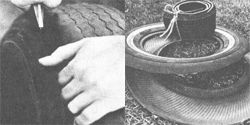
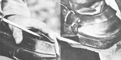
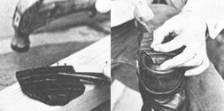
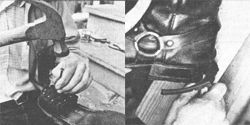
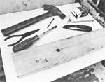

See the image gallery for images.
|
 LEFT: Out through the sidewall, not the tread, The hand holding the tire is behind the cutting edge. RIGHT: The tread has been out loose and rolled up. |
 LEFT: Pry off the worn-out heel This one was cut from tread. You can see the tire card in the edge. RIGHT: Trace the heel. The thicker Part is at the rear to make up for wear at the back of the heel support. |
 LEFT: Start the nails. The pliers save your fingers. The heel is only roughly trimmed. RIGHT: The heel is nailed on, and more ""ails are added. Hold the nail with pliers... I really whacked my thumb doing it this way. |
|
 |
 |
|